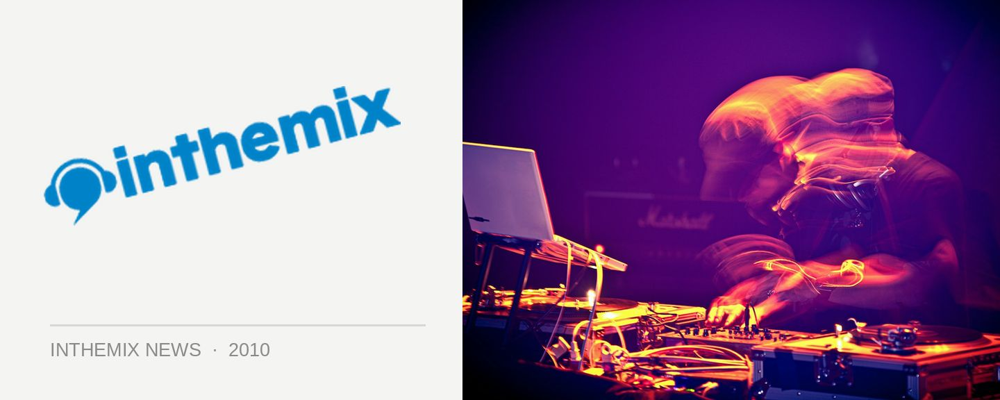

Pendulum previewing new album
It’s safe to say that anticipation levels are fairly high for Pendulum’s upcoming new album Immersion that’s due to drop later this year, with the effort ranking impressively high in our Most Anticipated Albums of 2010 countdown and promising a return to the electronic bliss of their classic Hold Your Colour debut. Plenty of us already had the chance to check out some of the new tunes on their DJ tour across the country during New Years, but for the rest of us, we’ll have another chance to have a listen when their set at Matter Nightclub in London is streamed live for all to hear – from around midday AEST on Saturday January 23rd.
When ITM spoke to Pendulum late last year, they said there will definitely be elements on the new album that throw back to their much-lauded debut. “We’ve definitely been going back to Hold Your Colour a lot; listening back to it and comparing where it went as opposed to In Silico. We’re definitely cross-referencing our earlier stuff on this one, but obviously it’s going to sound like a progression of where we were when we left In Silico.” We can’t wait!
Make sure you tune into www.pendulum.com from midday AEST on Satuday January 23rd to catch a sneak preview of some of Pendulum’s new album being blasted live from London. Check out the trailer below…